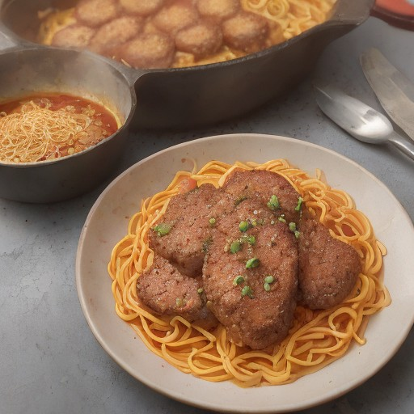

パスタ
悪魔の甘辛ローストビーフ & オニオンソーススパイス炒めパスタ

悪魔の甘辛さが爆発！ ローストビーフと特製オニオンソースをスパイスで炒めて、濃厚なソースをパスタに絡めて、まるで地獄の宴を味わえるような、極上パスタ。
💡 こんな時・こんな人におすすめ！
特別な日や、特別な夜に、特別な一杯を味わおう
📋 必要な材料（ポストイット風）
材料リスト 1
- ローストビーフ200g
- 特製オニオンソース100g
- パスタ150g
材料リスト 2
- スパイス(例: 赤唐辛子, クミン, ローズマリー, etc.)適量
- バター大さじ2
🍳 作り方ステップ
1
ローストビーフは厚さに合わせてカットし、スパイスを振る。
2
特製オニオンソースは、玉ねぎ、ニンジン、セロリなどを使用し、細かく刻んで混ぜる。
3
パスタを茹でる。
4
フライパンにバターを溶かし、ローストビーフと特製オニオンソースを炒める。パスタを加えて炒め、完成。